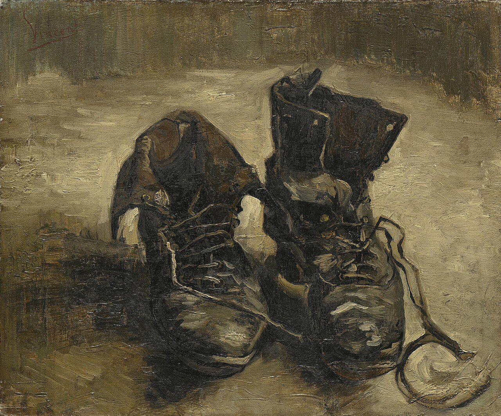

세계가 나에게 배달될 때
나는 세계를 겪는가
00이 주차의 위상
안더스는 하이데거와 아도르노를 함께 계승. 그래서 하이데거를 먼저 살펴보고 안더스로 넘어감.
- 날씨 — 앱에서 봄.
- 뉴스 — 피드에서 봄.
- 친구의 근황 — 스토리에서 봄.
- 오는 길 — 지도가 알려줌.
- 겪은 것은 세계인가, 세계의 배달본인가. 그리고 그 둘의 차이를 느낄 수 있는가.
01오늘 만날 개념
- 존재 · 존재자Sein / Seiendes
- 존재자는 있는 것들(책상·나무·망치). 존재는 그것들이 있다는 것 자체의 의미이자 드러나는 방식임. 둘은 같지 않음 — 이것이 존재론적 차이.
- 현존재Dasein · 거기-있음
- 자신의 존재가 스스로에게 문제가 되는 존재자. 곧 인간임. 망치는 "나는 왜 있는가"를 묻지 않음.
- 세계-내-존재In-der-Welt-sein
- 인간은 먼저 주체로 있다가 세계와 만나는 것이 아니라, 처음부터 의미의 그물 속에 있음.
- 손안의 존재 · 눈앞의 존재Zuhandenheit / Vorhandenheit
- 쓰일 때 드러나는 존재 방식과 관찰·분석될 때 드러나는 존재 방식임.
- 테크네 · 포이에시스technē / poiēsis
- 테크네는 기술과 예술을 함께 뜻한 그리스어. 포이에시스는 감춰진 것을 이끌어내 나타나게 함임.
- 알레테이아alētheia · 비은폐
- 가려진 것이 드러남. 하이데거의 진리는 "맞음"이 아니라 "드러남"임.
- 게슈텔Gestell · 닦달 · 몰아세움
- 모든 것을 동원 가능한 자원으로 드러내도록 요구하는 현대 기술의 질서임.
- 부품Bestand
- 게슈텔 안에서 드러난 존재 방식. 언제든 꺼내 쓸 수 있게 대기 중인 것임. 요즘 말로 on-demand.
- 팬텀phantom
- 안더스에게는 존재하면서 동시에 존재하지 않는 것임. 존재론적 모호성.
- 매트릭스matrix
- 모체·회로망·행렬·활판. 안더스에게는 실재가 복제되는 틀임.
- 객체지향 프로그래밍OOP
- 데이터와 기능을 객체로 묶고, 내부를 감춘 채 서로 메시지만 주고받게 하는 방식임.
- 객체지향 존재론OOO
- 그레이엄 하먼 등. 모든 객체는 서로에게 완전히 드러나지 않고 물러나 있다는 존재론임.
02존재와 시간 — 현존재와 도구
이미 세계 안에서 사물·타인과 관계하며
자신의 가능성을 실현하는 존재임.
출발점 — 데카르트 비판
데카르트
주체와 객체- 출발점은 생각하는 나(코기토)
- 망치는 내 앞에 놓인 물체 — 연장과 측정 가능한 성질
- 묻는 것: "무엇을 확실하게 알 수 있는가"
하이데거
세계-내-존재- 출발점은 세계 속에서 살아가는 현존재
- 망치는 못을 박는 활동 속의 도구
- 묻는 것: "존재한다는 것은 무엇을 의미하는가"
하이데거가 객관적 관찰을 부정하는 것은 아님. 그보다 더 근본적인 관계가 먼저 있다는 것임.
① 존재론적 차이 — 존재와 존재자는 같지 않음
| 개념 | 독일어 | 의미 |
|---|---|---|
| 존재자 | Seiendes | 실제로 있는 모든 것. 사람·나무·망치·책상 |
| 존재 | Sein | 존재자가 존재한다는 것의 의미이자 그 존재 방식 |
| 존재론적 차이 | ontologische Differenz | 둘은 같지 않다는 구분. 철학이 다시 물어야 할 것은 존재임 |
- 물리학자에게 — 무게와 길이가 있는 물체.
- 목수에게 — 못을 박는 도구.
- 박물관 관람객에게 — 역사적 유물.
- → 같은 존재자가 맥락에 따라 다르게 드러남.
위 사례는 드러남의 다양성을 보여줄 뿐임. 하이데거가 궁극적으로 묻는 것은 그렇게 다양하게 드러날 수 있게 하는 '있다는 것' 자체의 의미임. 이것이 존재 물음(Seinsfrage).
② 현존재(Dasein) — 자신의 존재를 문제 삼는 존재자
- Da(거기) + Sein(존재) = 거기-있음. 인간을 '생각하는 정신'으로 규정하지 않기 위해 쓴 말임.
- 망치는 자신이 왜 있는지 묻지 않음. 인간은 "나는 어떻게 살아야 하는가"를 물음.
- 현존재는 속성이 정해진 완성품이 아니라 가능성 속에서 자신을 형성해 가는 존재임 — 그 본질이 실존(Existenz)에 있음.
③ 세계-내-존재 — 의미의 연관망
여기서 '세계'는 물리적 공간이 아니라 환경·관계·도구·관습·목표가 서로 연결된 의미의 세계임.
목수는 이 관계를 머릿속에서 계산한 뒤 행동하지 않음. 이미 작업 세계에 익숙해져 있음. 이것이 의미 연관망(Bedeutsamkeit)임.
④ 손안의 존재와 눈앞의 존재
손안의 존재
Zuhandenheit · 쓰일 때- 목수는 망치의 무게·재질을 일일이 생각하지 않음
- 손과 망치가 결합되어 작업이 진행됨
- 망치는 작업에 스며들어 사라짐
눈앞의 존재
Vorhandenheit · 관찰할 때- 작업을 멈추고 망치를 책상에 놓고 길이·무게를 잼
- 망치가 관찰 대상으로 드러남
- 데카르트가 본 망치가 이것임
- 잘 작동하는 도구는 보이지 않음. 고장 나야 보임.
- 초보 운전자는 핸들과 페달을 의식함. 그래서 못 함. 숙련되면 핸들이 사라지고 길만 보임.
- 하이데거는 매체철학자가 아니지만, 매체철학의 핵심 통찰을 도구론으로 먼저 말했음.
⑤ 염려(Sorge) — 세 계기가 동시에 작동함
피투성
Geworfenheit- 출생 조건·시대·언어를 선택하지 않았음. 모든 선택은 주어진 조건에서 시작됨
기획투사
Entwurf- 아직 실현하지 않은 가능성을 향해 자신을 이해함
- 비본래적 기획투사 — 세인에 빠짐. 본래적 기획투사 — 자기 자신으로 존재함.
빠져 있음
Verfallen- 일상의 일과 세인(das Man)의 기준에 몰입해 있음
셋은 순서대로 일어나는 사건이 아니라 동시에 작동하는 하나의 구조임. 그 근본 지평이 시간성(Zeitlichkeit)임.
매체철학으로 확장 — 스마트폰
| 하이데거 개념 | 스마트폰 사용 사례 |
|---|---|
| 손안에 있음 | 메시지를 보낼 때 기기를 특별히 의식하지 않음 |
| 눈앞에 있음 | 배터리 성능·화면 크기를 객관적으로 비교할 때 |
| 세계-내-존재 | 연락처·메신저·직장·친구·관습이 연결된 생활세계 |
| 피투성 | 이미 스마트폰과 플랫폼이 보편화된 사회에 태어났음 |
| 정서성 | 같은 알림이 불안하게도, 반갑게도 느껴짐 |
| 세인 | 남들이 쓰는 플랫폼과 소통 관습을 따름 |
스마트폰이 손안의 존재에서 눈앞의 존재로 바뀌는 순간은 언제인가. 배터리가 나갔을 때, 신호가 끊겼을 때 — 그때 비로소 내가 무엇에 기대어 살고 있었는지가 드러남.
03테크네에서 게슈텔까지
「기술에 대한 물음」(1954). 핵심 — 기술은 인간이 쓰는 도구가 아니라, 세계를 특정한 방식으로 드러내는 힘임.
① 테크네와 포이에시스 — 만듦은 드러냄임
- 테크네(technē) — 기술·기예·제작에 관한 앎. 기술과 예술이 한 단어였음.
- 포이에시스(poiēsis) — 은폐에서 비은폐로 이끌어냄(bringing-forth). 시(poetry)의 어원임.
- 꽃이 봉오리에서 피어남 / 도공이 흙으로 항아리를 빚음 / 조각가가 대리석에서 상을 꺼냄 — 모두 무언가가 나타나는 과정임.
흙덩이가 있음. 도공은 흙의 성질을 알고, 형태를 구상하고, 빚고 굽음. 이전에 없던 항아리가 모습을 드러냄. 중요한 것은 물질 조작이 아니라 무엇이 어떻게 나타날 수 있는지를 알고 나타나게 하는 앎임.
② 알레테이아(alḗtheia) — 진리는 '맞음'이 아니라 '드러남'
| 구분 | 전통적인 진리 이해 | 하이데거의 알레테이아 |
|---|---|---|
| 핵심 | 판단과 대상의 일치 | 존재자가 은폐에서 벗어나 드러남 |
| 관심 | 명제가 참인지 거짓인지 | 사물이 어떻게 우리에게 나타나는지 |
| 항아리 | "이 항아리는 붉다"의 참·거짓 | 흙덩이에서 항아리가 모습을 드러내는 과정 |
"이 항아리는 붉다"고 판단하려면 먼저 항아리가 항아리로 드러나 있어야 함. 드러남이 판단보다 앞섬.
무언가를 한 방식으로 드러내는 것은 다른 방식으로 나타날 가능성을 가림. 이 한 문장이 뒤의 '위험' 논의 전체를 지탱함.
③ 고대의 테크네와 현대의 기술 — 무엇이 다른가
옛 물레방아
포이에시스 · 이끌어냄- 흐르는 물과 관계하면서 그 힘을 씀
- 강은 여전히 강으로 있음
수력발전소
게슈텔(gestell) · 닦아세움- 강물을 저장·통제·조직함
- 라인강이 수압·발전량·전력 공급량이라는 체계로 파악됨
- 강 자체가 전력 생산을 위해 배치된 자원으로 드러남
고대인도 자연을 이용했음. 차이는 현대 기술에서 자연 전체를 계산하고, 통제하고, 필요할 때 언제든 꺼내 쓸 수 있도록 확보하는 방식이 지배적이라는 데 있음.
④ 게슈텔과 부품
현대 기술의 본질은 기계나 도구가 아니라 게슈텔임. 게슈텔은 세계의 모든 것을 계산·동원·관리 가능한 자원으로 드러내도록 요구하는 질서이고, 그 질서 안에서 드러난 존재자가 부품(Bestand)임.
모든 존재자는 사용을 위해 조정되고
주문 요청되는 부품."
"사용을 위해 조정되고 주문 요청되는 것." 하이데거가 1950년대에 쓴 이 말이 지금 클라우드 서비스의 표준 용어임. 그리고 게슈텔은 개인이 선택하는 세계관이 아님 — 인간 자신도 그 질서 안에서 사고하도록 요구받음.
부품화의 계보
⑤ 왜 위험한가
- 기계가 사고를 내거나 환경을 파괴해서가 아님. 세계가 오직 계산·이용 가능한 자원으로만 드러나게 되는 것이 근본 위험임.
- 강을 발전량으로만 보면 역사적·문화적·생태적 의미가 가려짐. 인간을 생산성으로만 보면 그 사람의 고유한 삶이 가려짐.
- → 문제는 기술이 거짓된 세계를 보여준다는 것이 아니라, 세계가 드러나는 다른 가능성을 차단한다는 것임.
⑥ 구원의 가능성 — 다시 예술로
- 하이데거는 기술의 본성이 악하다고 말하지 않음. 폐기하거나 과거로 돌아가자고도 하지 않음.
- 횔덜린을 인용함 — "위험이 있는 곳에 구원의 힘도 자라난다."
- 구원은 기술을 없애는 것이 아니라 기술이 세계를 드러내는 유일한 방식이 아님을 깨닫는 데서 시작됨.
- 그래서 예술임 — 예술도 그리스에서는 테크네였음. 계산·관리가 아니라 이전에 드러나지 않던 의미를 나타나게 함.
- → 15주차 육후이의 코스모테크닉스가 정확히 이 자리에서 출발함.

미술사가 마이어 샤피로는 "그 구두는 농부 것이 아니라 고흐 자신의 것"이라고 반박했음. 데리다가 이 논쟁을 다시 다뤘음. 해석이 대상을 만든다는 점에서 그 자체로 좋은 사례임.
데이터화(datafication)는 게슈텔의 완성인가. "모든 것이 데이터가 될 수 있다"는 말은 "모든 것이 부품이 될 수 있다"와 같은 말인가.
04프로메테우스적 부끄러움

기술에 대한 비관
- 세계는 하나의 거대 기기.
- 기술은 이미 수단이 아님.
- 기술이 인간을 소비함 → 주객전도.
프로메테우스적 부끄러움과 격차
- 호모 파베르(도구적 인간)는 끊임없이 기기를 생산함.
- 인간이 자신이 만들어낸 사물로부터 소외. 기기가 점차 거대기기로 체계화.
- 프로메테우스적 격차 — 인간과 생산물 세계 사이의 비동시성. 격차가 증가함. 인간은 자신이 만든 사물의 노예가 됨.

- 프로메테우스는 인간에게 불을 준 신임. 인간은 만드는 존재임.
- 그런데 안더스가 말하는 부끄러움은 이것임 — "내가 만든 것이 나보다 낫다."
- 기계는 지치지 않고, 틀리지 않고, 죽지 않음.
- 나는 그 앞에서 내가 만들어진 것이 아니라 태어난 존재라는 것이 부끄러움.
- AI 초안을 보고 "내가 쓴 것보다 낫네" 하고 느낀 적이 있는가.
- 그때 든 감정은 고마움인가, 안도인가, 부끄러움인가, 화인가.
- 안더스는 그것이 부끄러움이라고 1956년에 예측했음. 맞았는가.
05팬텀(phantom)의 세계
대중매체의 하위문화 생산 비판
- TV와 라디오는 탈문자적 문맹자 집단을 유도함.
- 아이콘 매니아를 위한 기계적 이미지를 대량생산함.
- 대중의 교양과 문화 수준이 저하됨.
팬텀이란
- 존재하지만(현실) 존재하지 않는(가상) 것. 존재론적 모호성임.
- TV의 현장 생중계가 그 전형임.
- 팬텀을 통한 세계 체험의 일상화. 가상 세계를 실재 세계로 인식하는 혼란.
- 생중계되는 화면 속 사건은 실제로 일어나고 있음.
- 그런데 나는 거기 없음.
- 있는 것도 아니고 없는 것도 아닌 상태 — 그것이 존재론적 모호성임.
- 재난 생중계를 보며 안전한 방에 앉아 있을 때.
- 지구 반대편 전쟁 영상을 보고 다음 영상으로 넘어갈 때.
- 라이브 커머스에서 "지금 딱 세 개 남았습니다"를 볼 때.
- → 나는 그 자리에 있는가, 없는가.
- 보드리야르 — 원본이 없음.
- 안더스 — 원본이 있는데 내가 거기 없음.
06매트릭스(matrix)와 대중의 퇴행
매트릭스란
- 모체 · 회로망 · 행렬 · 활판의 뜻.
- TV가 실재를 복제하는 방식이 반영되는 구성물.
- 취재·편집·제작 규칙대로 짜여지는 판.
- 가계도 교란 — 출생의 비밀, 유전자 검사지 조작, 원수 집안과의 결혼이 반복됨.
- 이분법적 대립 — 당하기만 하다 복수하는 '절대 선'과 범죄를 일삼는 '절대 악'이 격돌함.
- 파괴적 클리셰 — 주스 뱉기, 김치 뺨 때리기, 뒷목 잡고 쓰러지기가 필수 연출임.
- 황당한 설정 — 점 하나 찍고 다른 사람으로 변장, 갑작스러운 기억상실증.
- 자극적 편집 — 매회 충격적 폭로와 경악하는 얼굴 클로즈업으로 끝냄.
- 급전개 결말 — 악인의 갑작스러운 불치병이나 몰락 후 번개같이 용서하며 종영함.
→ 작가가 이야기를 쓰는 것이 아니라, 판이 이야기를 뽑아냄. 안더스가 말한 매트릭스가 이것임. 6주차 아도르노의 '규격화된 획일성'과 같은 대상을 다른 이름으로 본 것.
실재와 가상의 자리바꿈
차이 소멸
능가함
따름
- 관광지가 사진 잘 나오게 개조됨. 포토존이 먼저, 풍경이 나중임.
- 음식점이 배달 사진에 맞게 플레이팅을 바꿈.
- 정치인이 짧은 클립에 맞게 말함.
대중의 퇴행 — 세 갈래
① 수동적 소비자
주는 것만 봄- 정해진 방식으로 제작·제공된 콘텐츠만 소비함
- 주체적 생산 참여가 불가능함
② 몰개성화
취향이 수렴함- 개인적 취향과 개성이 소멸함
③ 개인화
혼자 봄- 사회적 세계를 사적 공간에서 개별적으로 체험함
- 상호작용이 없음
- 몰개성화와 개인화가 동시에 일어남 — 모순처럼 보이지만 모순이 아님.
- 각자 다른 것을 봄 (개인화). 각자 혼자 봄 (상호작용 없음). 그런데 결과는 비슷해짐 (몰개성화).
- → 6주차 아도르노의 '유사개인화'와 정확히 같은 구조임. 두 사람 모두 같은 것을 봤음.
- → 13주차 플루서의 '원형극장형'(참여자 사이 소통 없음, 채널만 존재)이 이것의 도해임.
안더스의 관점과 한계
그가 본 것
종말론적 매체관- TV는 정보 전달 수단이 아니라 인식과 생활에 영향을 미치는 거대한 판이자 세계 자체
- 생활의 일부라 객관적 거리두기가 불가능
- 가상이 실재를 잡아먹는 비극적 사건
그가 못 본 것
- 실재 조작이라는 부정적 측면에만 초점을 둠
- 수용자의 능동성을 무시. 중독이 아닌 활용도 가능함
- 쌍방향성과 사회적 시청을 보지 못했음
07지각의 확장과 축소
심혜련(2024) II부 3장 1절 「지각의 재평가」 pp.207~212 + 3절 「매체에 의한 지각의 확장과 축소」 pp.222~229.
- 1절 — 지각을 낮은 인식으로 보던 전통에 대한 재평가임. 매체철학이 왜 지각을 중심에 놓는지가 여기서 설명됨.
- 3절 — 이 절의 제목이 곧 오늘의 물음임.
맥루언 9~10주차
확장- 미디어는 인간의 확장임
안더스 오늘
축소- 매체는 인간을 무능력하게 만듦
심혜련
둘 다- 확장이면서 동시에 축소임
- 개인화 피드는 지각을 확장하는가 축소하는가.
- 확장 — 내가 결코 못 만났을 세계를 만남.
- 축소 — 내가 만날 세계가 미리 걸러짐.
- 두 답이 모두 참일 때, 무엇을 판단 기준으로 삼는가.
08객체지향 — OOP(Object-Oriented Programming)와 OOO(Object-Oriented Ontology)
변정수(2025) 4부 6장 「객체지향프로그래밍과 객체지향 철학」.
의식에서 물러남
서로 다 드러나지 않음
기능만 제공함
① 하먼의 객체지향 존재론(OOO)
- 모든 것이 객체 — 인간·망치·나무·컴퓨터가 동등하게 객체임.
- 객체는 독립적으로 존재 — 망치는 인간이 쓰지 않아도 존재함.
- 객체는 관계보다 더 많은 것을 가짐 — 망치가 못을 박는 데 쓰여도 망치의 존재가 그 기능으로 끝나지 않음.
- 객체는 완전히 드러나지 않음 — 불이 나무를 태울 때도 불은 나무의 모든 특성과 관계하지 않음.
하이데거의 물러남은 인간과 사물 사이의 일이었음. 하먼은 이를 넓힘 — 물러남은 사물과 사물 사이에서도 일어남. 인간이 특별한 자리를 잃는 대목임.
② OOP의 네 원칙
| 원칙 | 내용 |
|---|---|
| 캡슐화 Encapsulation | 내부 데이터를 감추고 정해진 인터페이스로만 접근하게 함 |
| 상속 Inheritance | 기존 객체의 성질을 물려받음 |
| 다형성 Polymorphism | 같은 메시지에 객체마다 다르게 반응함 |
| 추상화 Abstraction | 필요한 것만 드러내고 나머지는 숨김 |
③ 하이데거의 부품과 OOP의 객체는 같은 것인가
| 하이데거의 부품(Bestand) | OOP의 객체(Object) |
|---|---|
| 필요할 때 동원되는 자원 | 필요할 때 호출되는 프로그램 단위 |
| 인간과 자연을 자원으로만 보는 태도 비판 | 효율적인 프로그램 설계 방법 |
구조는 거의 같은데 평가가 정반대임. 하이데거는 세계를 자원으로만 보는 것을 경계하고, OOP는 프로그램을 잘 설계하려는 것임. 같은 서술이 어디서는 경고가 되고 어디서는 모범이 됨 — 왜 갈리는가.
④ 캡슐화는 하먼의 '물러남'인가
- 캡슐화 — 자판기는 버튼만 보여주고 내부를 감춤. 그런데 뚜껑을 열면 내부를 확인할 수 있음.
- 하먼의 물러남 — 자판기를 분해하고 분석해도 자판기의 존재 전체를 완전히 파악할 수는 없음.
- → 핵심 차이: 캡슐화는 일부러 감춘 것, 물러남은 원리적으로 완전히 드러날 수 없는 것임.
하이데거는 도구가 사용 중에 의식에서 물러남을 설명했고, 하먼은 이를 확장해 모든 객체가 다른 객체와의 관계에서도 완전히 드러나지 않는다고 주장함. OOP의 캡슐화는 이를 이해하기 좋은 비유이지만, 철학적으로 동일한 개념은 아님.
09정리 · 흔한 오해 · 토론
이번 주 개념 다섯
- 존재론적 차이 · 현존재 존재자와 존재는 같지 않음. 그리고 자신의 존재를 문제 삼는 존재자가 현존재임.
- 손안의 존재 / 눈앞의 존재 쓰일 때 사라지는 도구와, 관찰 대상이 된 사물.
- 테크네 · 포이에시스 · 알레테이아 기술은 드러냄의 한 방식이고, 진리는 맞음이 아니라 드러남임.
- 게슈텔 / 부품 모든 것을 동원 가능한 자원으로 드러내도록 요구하는 질서와 그렇게 된 것.
- 팬텀 / 매트릭스 있으면서 없는 것과, 실재가 복제되며 짜이는 판.
흔한 오해 넷
- 교정 — 하이데거는 기술의 본성은 악하지 않다고 명시함.
- 문제는 기술이 아니라 게슈텔이라는 드러냄의 방식임. 그 안에 구원의 가능성도 있다고 봄.
- 교정 — 부러진 망치는 곧바로 관찰 대상이 되지 않음. 먼저 '수리해야 할 도구'로 드러남.
- 고장은 도구 사용이 방해받는 중간적 현상임.
- 교정 — 팬텀은 가짜가 아니라 존재론적으로 모호한 것임.
- 생중계 속 사건은 실제로 일어남. 문제는 나의 위치임.
- 교정 — 안더스의 통찰은 둘이 함께 온다는 것임.
- 각자 다른 것을 혼자 보는데 결과는 비슷해짐.
토론 질문
- 스마트폰이 '눈앞의 존재'가 되는 순간은 언제인가.
그 순간에 비로소 드러나는 것은 무엇인가. 고장이 알려주는 것은 기기의 성능인가, 내가 기대고 있던 세계인가. - 데이터화는 게슈텔의 완성인가.
"모든 것이 데이터가 될 수 있다"는 "모든 것이 부품이 될 수 있다"인가. 그렇다면 가려지는 것은 무엇인가. - 안더스는 "세계가 집으로 배달된다"고 했음. 지금은 "세계가 예측되어 배달됨."
무엇이 달라졌는가. 배달의 수동성과 예측의 선제성. 나는 무엇을 원하는지 알기 전에 이미 받음. - 개인화 피드는 지각을 확장하는가 축소하는가.
두 답이 모두 참이라면 판단 기준은 무엇인가. - 하이데거의 부품과 OOP의 객체는 같은 것인가.
구조가 거의 같은데 평가가 정반대인 이유는 무엇인가. 캡슐화는 하먼의 '물러남'인가. - 안더스는 수용자의 능동성을 무시했다는 비판을 받음.
댓글·라이브채팅·시청 파티는 그가 말한 "상호작용 없음"을 깼는가, 아니면 상호작용까지 판에 포함시켰는가.
10참고자료
이번 주 읽기
- B 심혜련 (2012). 『20세기의 매체철학』 — 1부 4장
- C 심혜련 (2024). 『21세기의 매체철학』 — II부 3장 1절 pp.207~212 + 3절 pp.222~229
- D 변정수 (2025). 『알고리즘으로 철학하기』 — 4부 6장
원전
- 마르틴 하이데거. 『존재와 시간』 — §§15~18(도구연관·손안의 존재)만. 그 대목은 학부생도 읽힘
- 마르틴 하이데거. 「기술에 대한 물음」 — 테크네·게슈텔·부품 대목만
- 마르틴 하이데거. 『예술작품의 근원』 — 고흐의 구두 대목
- 귄터 안더스. 『인간의 골동품성』 — 국역 발췌
보조
- 그레이엄 하먼. 『쿼드러플 오브젝트』 또는 『비유물론』 객체지향 존재론 입문
- 이광석 등 (2016). 『현대 기술-미디어 철학의 갈래들』. 그린비 — 하이데거 장
- 김선희 등 (2024). 『인공지능 시대의 철학자들』. 사월의책
- Stanford Encyclopedia of Philosophy — "Martin Heidegger" 항목 영어 입문으로 가장 정확함
이어지는 주차
- 9~10주차 — 토론토 커뮤니케이션학파: 이니스 · 옹 · 맥루언 물질성
안더스가 축소라 본 것을 맥루언은 확장이라 부름. 오늘의 대립이 그대로 이어짐.